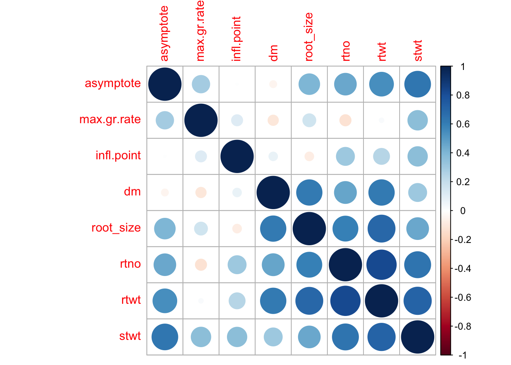

Plant height may20
Anna Magdalena
7/9/2020
Last updated: 2020-07-24
Checks: 6 1
Knit directory: 19_CFT/
This reproducible R Markdown analysis was created with workflowr (version 1.6.1). The Checks tab describes the reproducibility checks that were applied when the results were created. The Past versions tab lists the development history.
Great! Since the R Markdown file has been committed to the Git repository, you know the exact version of the code that produced these results.
Great job! The global environment was empty. Objects defined in the global environment can affect the analysis in your R Markdown file in unknown ways. For reproduciblity it’s best to always run the code in an empty environment.
The command set.seed(20200428) was run prior to running the code in the R Markdown file. Setting a seed ensures that any results that rely on randomness, e.g. subsampling or permutations, are reproducible.
Great job! Recording the operating system, R version, and package versions is critical for reproducibility.
- read data
- session-info-chunk-inserted-by-workflowr
- setup
- spats
- unnamed-chunk-1
- unnamed-chunk-2
- unnamed-chunk-3
To ensure reproducibility of the results, delete the cache directory 2005_height_cache and re-run the analysis. To have workflowr automatically delete the cache directory prior to building the file, set delete_cache = TRUE when running wflow_build() or wflow_publish().
Great job! Using relative paths to the files within your workflowr project makes it easier to run your code on other machines.
Great! You are using Git for version control. Tracking code development and connecting the code version to the results is critical for reproducibility.
The results in this page were generated with repository version 963f827. See the Past versions tab to see a history of the changes made to the R Markdown and HTML files.
Note that you need to be careful to ensure that all relevant files for the analysis have been committed to Git prior to generating the results (you can use wflow_publish or wflow_git_commit). workflowr only checks the R Markdown file, but you know if there are other scripts or data files that it depends on. Below is the status of the Git repository when the results were generated:
Ignored files:
Ignored: .DS_Store
Ignored: .RData
Ignored: .Rhistory
Ignored: .Rproj.user/
Ignored: analysis/2005_height_cache/
Ignored: data/.DS_Store
Untracked files:
Untracked: 19_CFT.RData
Untracked: analysis/plant_height.Rmd
Untracked: data/19.CASS.CFT.IBA_combined.csv
Untracked: data/200522_all_sh_height.csv
Untracked: data/210720_psplines_data.Rdata
Untracked: data/HTP_BiomassOverTime.csv
Untracked: data/HTP_BiomassOverTime2.csv
Untracked: data/Plant_height.csv
Untracked: data/Plant_height.xlsx
Untracked: data/harvest_data.csv
Untracked: data/phenotype_DROPS_10Env.csv
Untracked: data/phenotype_DROPS_10Env2.csv
Untracked: data/yield_geno.csv
Untracked: old.Rmd
Untracked: output/200428_plantheight.png
Untracked: output/210720_psplines
Untracked: plant_height.html
Untracked: results_freq20_biomass_NoError.csv
Untracked: results_freq20_height.csv
Note that any generated files, e.g. HTML, png, CSS, etc., are not included in this status report because it is ok for generated content to have uncommitted changes.
These are the previous versions of the repository in which changes were made to the R Markdown (analysis/2005_height.Rmd) and HTML (docs/2005_height.html) files. If you’ve configured a remote Git repository (see ?wflow_git_remote), click on the hyperlinks in the table below to view the files as they were in that past version.
| File | Version | Author | Date | Message |
|---|---|---|---|---|
| html | 7dc5d43 | amgvandoorn | 2020-07-23 | Build site. |
| Rmd | f3810d6 | amgvandoorn | 2020-07-23 | wflow_publish(c(“analysis/index.Rmd”, “analysis/about.Rmd”, “analysis/license.Rmd”, |
Introduction
The analysis of the CFT 2019/2020 data is a multistep process. First we do a spatial correction with the SPaTS package for each screenhouse, at each time point for the plant height data.
Then we use the Finlay Wilkinson model to calculate the environmental index (Eind) to correct fo differences between screenhouses.
Subsequently we compare two models to fit the growth curves, a logistic growth model and a Psplines model. With the preferred model fit the growth curve for each even within each construct, the parameters derived from the fitted function can then be correlated to the final harvest data.
ph=read.csv(here("data/plant_height.csv")) plot_number env geno C R week value
1 1001 sh1 4_597 1 19 6 34
2 1001 sh1 4_597 1 19 7 41
3 1001 sh1 4_597 1 19 8 50
4 1001 sh1 4_597 1 19 9 61
5 1001 sh1 4_597 1 19 10 75
6 1001 sh1 4_597 1 19 11 103Step 1. SpATS correction
For the spatial correction we run a separate model for each screenhouse and each measurement. Therefore we need to adjust the data so that it is grouped by these two factors, then run the model. For the model we use row and column numbers, the names of the events and the construct each event belongs to.
# Group data by time and environment, attach the model, the residuals and predicted values.
byts=ph %>% group_by(week, env) %>% nest() %>%
mutate(
spats_model=map(data, spats_model),
predict=map(spats_model, function(spats_model) {
predict(spats_model, which=c("geno"))}),
residuals=map(spats_model, residuals)
)Figure 1. Spatial model for plant height in screenhouse 1 at 6 weeks after planting.
| Version | Author | Date |
|---|---|---|
| 7dc5d43 | amgvandoorn | 2020-07-23 |
Now that we have all the spatial models, we create a new dataframe with the residuals and the predicted values attached inside the data, with these two we calculate the corrected values.
newbyts=byts %>% mutate(
data=map(data, ~mutate(.x,residuals=unlist(residuals))),
#remove clutter
predict=map(predict, function(predict){
dplyr::select(predict, geno, predicted.values, standard.errors)})
)
#Join predict dataframe to data
for(i in 1:39){
newbyts$data[[i]]=dplyr::left_join(newbyts$data[[i]], newbyts$predict[[i]], by='geno')
}
# Add column for corrected values to data
newbyts %<>%
mutate(
data=map(data, ~mutate(.x,cor=residuals+predicted.values))
)Figure 2. Spatial model for plant height in screenhouse 1 at 6 weeks after planting, after spatial correction.
| Version | Author | Date |
|---|---|---|
| 7dc5d43 | amgvandoorn | 2020-07-23 |
We see now that there is only a spatial trend of -0.04-0.06 left, as opposed to to original -5-10 in Figure 1.
Step 2. GxE Finlay Wilkinson model
The next is to see whether there are large differences between the screenhouses. We use the new, corrected values to fit a spatial model for each timepoint, with the screenhouses together, thus tripling the number of rows.
# Group dataset by week, attach newly fitted spatial model
newbyt=dplyr::select(newbyts, env,week,data) %>%
unnest(data) %>% group_by(week) %>% nest() %>%
mutate(
spats_model=map(data,spats_model2)
)
Figure 3. Spatial model for all three screenhouses at 6 weeks after planting, after spatial correction.
| Version | Author | Date |
|---|---|---|
| 7dc5d43 | amgvandoorn | 2020-07-23 |
This is just to show how large the effect of each screenhouse is on the plant height, already in an early stage of the experiment. Since the screenhouses are better treated as three individual experiments, rather than a continuous gradient, we use a Finlay Wilkinson model to calculate the environmental index and fit a GxE model.
To classify the differences between screenhouses, we add a column classifying the screenhouse. Screenhouse 1 is used for the second year in a row and is therefore classed as depleted, screenhouse 2 and 3 are classed as normal.
fwdat= newbyt %>% mutate(
#remove superabundant wt replicates
data=map(data, function(data){ data[data$block_number<5,]}),
#add screenhouse classification
data=map(data, ~mutate(.x,ec=ifelse(sh=='sh1',"dep", "norm"))) )%>%
dplyr::select(-spats_model) %>% unnest(data) %>%
group_by(week, geno, env,ec) %>%
#get standard error and mean values per event per screenhouse per week
summarise( construct=unique(construct), event=unique(event),
se=std.error(cor, na.rm=T),height=mean(cor, na.rm=T)) %>%
group_by(week) %>% nest() %<>% mutate(
#fit Finlay Wilkinson model
fwfit=map(data, function(data){
fw(data=data.frame(data), y='height', Env='env', Geno='geno')}),
summary=map(fwfit, function(fwfit){fwfit$fits}),
adj.r2=as.double(map(summary, function(summary){summary$adj.r.squared})),
#extract fitted values
fitted=map(fwfit, fitted),
data=map(data, ~mutate(.x,fitted=unlist(fitted))),
E.max=as.double(map(fwfit, function(fwfit){max(fwfit$Eindex)})),
E.min=as.double(map(fwfit, function(fwfit){min(fwfit$Eindex)}))
) week adj.r2
1 6 0.2797330
2 7 0.5294590
3 8 0.4840273
4 9 0.6105517
5 10 0.7390020
6 11 0.7197223
7 12 0.7106286
8 13 0.7752208
9 14 0.7942427
10 15 0.8436524
11 19 0.8475994
12 24 0.7738344
13 28 0.7755524We see that the GxE model fits improve after week 9. Early on there is still some random variation, whereas later on >70% of the data is explained by the event and the environment.
Step 3. Time series model selection by construct
With the fitted values and the environmental index of the GxE model we calculate corrected genotypic values before fitting a growth model to the time series data. Then we compare the results of a logistc model and a p-spline model fitted to all events of each construct. Subsequently we fit our preferred model to each event individually.
# reformat the dataset for time series
fittime= fwdat %>% dplyr::select(week,data, E.max, E.min) %>% unnest(data) %>% group_by(week, geno) %>%
summarise(construct=unique(construct), event=unique(event), fit.min=min(fitted), fit.max=max(fitted), E.min=min(E.min), E.max=max(E.max), a=(fit.max-fit.min)/(E.max-E.min)) %>% mutate(
height=fit.max-a*E.max
)
#fit time, by construct
ft.byc =fittime%>% group_by(construct) %>% nest() %<>%
mutate(
#Psplines model
obj=map(data, function(data){
PsplinesREML(x=data$week,y=data$height, xmin=6, xmax=28)}),
predw=map2(obj,data, function(obj,data){predict(obj, data$week)}),
data=map(data, ~mutate(.x, predw=unlist(predw))),
#Logistic model
obj.nls=map(data, function(data){
nls(height ~ SSlogis(week, phi1, phi2,phi3), data=data)}),
cf = map(obj.nls, coef),
alpha = as.double(map(cf, function(cf){as.numeric(cf[1])})),
beta = as.double(map(cf, function(cf){as.numeric(1/cf[3])})),
gamma = as.double(map(cf, function(cf){as.numeric(cf[2])})),
theta = pmap(list(alpha, beta,gamma), c),
predLw=map2(theta,data, function(theta,data){logistic(data$week,theta)}),
data=map(data, ~mutate(.x, predLw=unlist(predLw)))
)
predat.cw= ft.byc %>% dplyr::select(construct, data) %>% unnest(data)
#Extract Psplines model adjusted R2
r2=with(predat.cw, summary(lm(height~predw)))$adj.r.squared
#Extract logistic model adjusted R2
r2L=with(predat.cw, summary(lm(height~predLw)))$adj.r.squared
Figure 4. Psplines and logistic model fit for each construct.
| Version | Author | Date |
|---|---|---|
| 7dc5d43 | amgvandoorn | 2020-07-23 |

Figure 5. Comparison of the correlation between the two model fits and the observed data.
| Version | Author | Date |
|---|---|---|
| 7dc5d43 | amgvandoorn | 2020-07-23 |
Model Adj.R2
1 Psplines 0.9952914
2 Logistic 0.9825296We obseverve an underestimation of the plant height prediction by the logistic model when the plants are approximately 300cm tall, at 15 weeks after planting. Also the correlation fit shows a slightly lower fit for the logistic model output than for the Psplines model output. Therefore we decide to continue fitting the Psplines model to the time series data of each event within the clones.
The Psplines model produces three model parameters, the asymptote for maximum height, the maximum growth rate and the inflection point which is the time point during the experiment at which maximum growth occured. These three parameters can then be treated as traits together with final harvest traits.
Step 4. Time series per event
We recalculate the Psplines model per event, the single observation input per timepoint removes the wobble that is observed in figure 4.
construct event geno asymptote maximum.growth.rate inflection.point
1 3 541 3_541 383.02 30.33 14.29
2 3 589 3_589 420.62 31.98 14.31
3 3 646 3_646 418.94 32.66 14.25
4 3 691 3_691 408.82 30.14 14.32
5 3 695 3_695 424.55 34.17 14.26
6 3 696 3_696 414.97 32.92 14.42
Figure 6. Psplines model output per event. Asymptote, maximum growth rate and inflection point are given for the highest performing event within each construct.
| Version | Author | Date |
|---|---|---|
| 7dc5d43 | amgvandoorn | 2020-07-23 |
Step 5. Correlation of traits
We import the final harvest data, and select the traits that we can correlate to the time series traits. These are root size, root number, shoot weight, root weight and dry matter content. We do a spatial correction for each trait before we do a correlation with the growth model traits.
#import harvest data
hv=read.csv(here('data/harvest_data.csv'))
#traits to correlate
ttc=hv %>% dplyr::select(env,construct, event, geno, env,plot_number, row_number,newrow, col_number, root_size, rtno, stwt,rtwt, dm)We create a tibble attaching the spatial model, extract the residuals and the predicted values, and subsequently calculate corrected values. With these, we fit the Finlay Wilkinson model again to calculate the trait value for each event for the environmental index of 0.
#spatial correction
traits=c('root_size', 'rtno', 'stwt','rtwt', 'dm')
ttc.long=ttc %<>% pivot_longer(cols=traits,
names_to = "trait",
values_to = "value") %<>%
group_by(env, trait) %>% nest() %>%
mutate(
spats_model=map(data, spats_model),
predict=map(spats_model, function(spats_model) {
predict(spats_model, which=c("geno"))}),
residuals=map(spats_model, residuals),
residuals=map(residuals, function(residuals){ifelse(is.na(residuals), 0, residuals)}),
data=map(data, ~mutate(.x,residuals=unlist(residuals))),
#remove clutter
predict=map(predict, function(predict){
dplyr::select(predict, geno, predicted.values, standard.errors)})
)
#Join predict dataframe to data
for(i in 1:15){
ttc.long$data[[i]]=dplyr::left_join(ttc.long$data[[i]], ttc.long$predict[[i]], by='geno')
}
# Add column for corrected values to data
ttc.long %<>%
mutate(
data=map(data, ~mutate(.x,cor=residuals+predicted.values)))
# Finlay wilkinson correction
check=ttc.long %>% dplyr::select(-spats_model, -predict, -residuals) %>%
unnest(data)
fw.hv=ttc.long %>% dplyr::select(-spats_model, -predict, -residuals) %>%
unnest(data) %<>% group_by(trait, env, geno) %>%
summarise(construct=unique(construct), event=unique(event),sd=std.error(cor, na.rm=T), mean=mean(cor, na.rm=T)) %>%
group_by(trait) %>% nest() %>% mutate(
fwfit=map(data, function(data){
fw(data=data.frame(data), y='mean', Env='env', Geno='geno')}),
summary=map(fwfit, function(fwfit){fwfit$fits}),
adj.r2=as.double(map(summary, function(summary){summary$adj.r.squared})),
#extract fitted values
fitted=map(fwfit, fitted),
data=map(data, ~mutate(.x,fitted=unlist(fitted))),
E.max=as.double(map(fwfit, function(fwfit){max(fwfit$Eindex)})),
E.min=as.double(map(fwfit, function(fwfit){min(fwfit$Eindex)}))
) %>% dplyr::select(-fitted)
hv.dat=fw.hv %>% dplyr::select(trait, data, E.max, E.min) %>% unnest(data) %>% group_by(trait, geno)
hv.short=hv.dat %>%
summarise(construct=unique(construct), event=unique(event), fit.min=min(fitted),fit.max=max(fitted),
E.min=min(E.min), E.max=max(E.max), a=(fit.max-fit.min)/(E.max-E.min)) %>%
mutate(value=round(fit.max-a*E.max,3)) %>%
pivot_wider(id_cols=c(construct, event, geno), names_from=trait, values_from=value)
all.dat=results %>% dplyr::left_join(dplyr::select(hv.short, -construct, -event), by='geno')%>% data.frame()We have now attached the final harvest values for each event to the growth rate traits, and we can do the correlation.
construct event geno asymptote max.gr.rate infl.point dm root_size
1 3 541 3_541 383.02 30.33 14.29 30.538 3.158
2 3 589 3_589 420.62 31.98 14.31 29.445 3.526
3 3 646 3_646 418.94 32.66 14.25 31.137 3.794
4 3 691 3_691 408.82 30.14 14.32 31.149 3.921
5 3 695 3_695 424.55 34.17 14.26 31.451 4.259
6 3 696 3_696 414.97 32.92 14.42 30.817 3.721
7 3 698 3_698 417.20 31.10 14.28 30.182 4.259
8 4 1020 4_1020 431.50 31.87 14.33 31.721 3.941
9 4 553 4_553 412.69 29.88 14.31 29.942 3.694
10 4 594 4_594 418.78 31.89 14.32 29.585 3.849
11 4 597 4_597 414.59 30.04 14.44 30.473 3.812
12 4 649 4_649 426.14 35.34 14.28 30.090 4.225
13 4 653 4_653 426.86 32.28 14.28 31.677 4.426
14 4 827 4_827 449.25 32.62 14.34 31.519 4.645
15 7 1087 7_1087 416.58 33.05 14.17 28.985 3.740
16 7 1148 7_1148 423.74 31.69 14.35 31.286 4.283
17 7 1149 7_1149 415.29 26.19 14.23 30.595 3.995
18 7 1152 7_1152 424.24 31.32 14.34 30.295 4.110
19 7 567 7_567 401.52 29.88 14.28 30.349 3.817
20 7 661 7_661 382.84 32.24 14.36 32.350 4.310
21 7 667 7_667 425.95 29.94 14.31 30.015 3.481
22 wt 60444 wt_60444 412.84 28.08 14.21 33.052 4.545
rtno rtwt stwt
1 6.563 0.863 2.329
2 7.303 1.097 2.851
3 6.648 1.158 3.273
4 7.690 1.211 2.649
5 7.302 1.115 3.381
6 6.795 1.213 2.780
7 7.322 1.075 2.664
8 7.580 1.444 3.613
9 7.095 1.105 2.776
10 7.269 1.089 3.199
11 7.908 1.343 3.173
12 7.589 1.228 2.891
13 7.783 1.354 2.815
14 8.314 1.562 4.147
15 5.539 0.944 2.183
16 7.481 1.199 2.838
17 7.495 1.182 2.442
18 8.377 1.307 3.540
19 5.926 0.892 2.174
20 7.015 1.151 2.769
21 6.845 0.939 2.463
22 8.277 1.512 2.788
| Version | Author | Date |
|---|---|---|
| 7dc5d43 | amgvandoorn | 2020-07-23 |
asymptote max.gr.rate infl.point dm root_size rtno rtwt stwt
asymptote 1.0000 0.291 0.0054 -0.048 0.409 0.45 0.541 0.63
max.gr.rate 0.2914 1.000 0.1186 -0.103 0.161 -0.12 0.021 0.37
infl.point 0.0054 0.119 1.0000 0.072 -0.074 0.31 0.246 0.36
dm -0.0480 -0.103 0.0719 1.000 0.615 0.46 0.619 0.31
root_size 0.4086 0.161 -0.0741 0.615 1.000 0.60 0.696 0.45
rtno 0.4516 -0.121 0.3123 0.460 0.595 1.00 0.824 0.65
rtwt 0.5414 0.021 0.2456 0.619 0.696 0.82 1.000 0.71
stwt 0.6347 0.366 0.3619 0.312 0.454 0.65 0.712 1.00
sessionInfo()